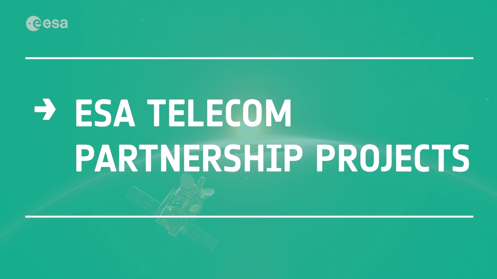
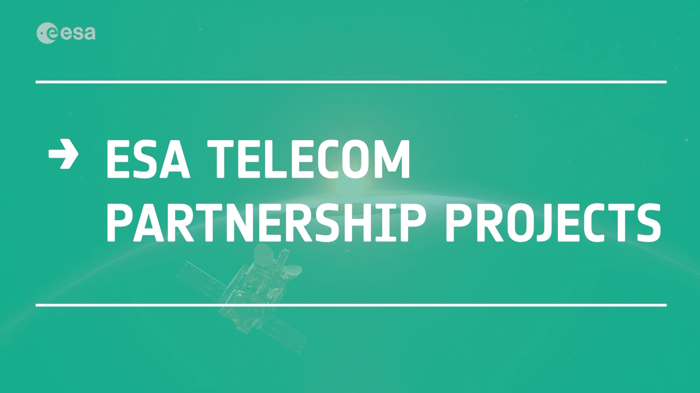

Partnership Projects
ESA’s Partnership Projects provide the satellite communication industry with the right environment to introduce innovative space-based solutions systems into the commercial market.
ESA has implemented several Partnership Projects through its programme of Advanced Research in Telecommunications Systems (ARTES). These include Eagle 1, HummingSat, Novacom and Triton-X, ranging from large geostationary satellites to cubesats, as part of a portfolio of more than 50 satellite-based systems at different stages of implementation.
These demonstrate the unique results of Partnership Projects in federating European industry around large-scale programmes and developing innovative cutting-edge solutions in partnership with private or public operators.
ESA Partnership Projects generate great benefits for industry and member states by fostering the competitiveness of the satcom industry in Europe and Canada, and creating new value-added solutions that would otherwise not be offered.
Moreover, Partnership Projects enable greater risk sharing where ESA bears the risks related to the development of innovative solutions and the operators assume the commercial risks in answer to market needs. Without this partnership approach, many projects would not have emerged because they would have been too risky either technically or commercially.
ESA’s involvement ensures high quality and performance, supporting primes and subcontractors while offering a tailored and efficient approach based on commercial best practices.
ESA’s Partnership Projects
Triton-X is a new micro-satellites product line and the first multi-mission platform for launches into low Earth orbit. The platform can accommodate payloads up to 90 kg for a wide range of applications including telecommunications, Earth observation, in-orbit demonstration and validation, situational awareness and optical missions. The programme covers on-ground qualification of the generic platform and in-orbit demonstration and validation of the innovative avionics sub-system.
QKDSat (Quantum Key Distribution Satellite) will offer a wide variety of cryptographic applications, serving government and private sectors where the security and confidentiality of shared information is critical. It is being developed by ESA in partnership with a private partner, which is a newly formed private QKD services operator called ArQit.
NEOSAT develops and qualifies two new satellite product lines, Eurostar Neo and Spacebus Neo, that enables the European space industry to deliver commercially competitive satellites in the 3 to 6 tonnes launch mass range. The programme includes the in-orbit validation of the new platforms. Neosat is a joint undertaking between ESA and the French Space Agency (CNES) with joint programme management.
PACIS 3 Govsatcom Precursor project is realised by ESA in partnership with Hisdesat and Airbus, and will develop, qualify and validate in-orbit innovative antenna technology and demonstrate novel pooling and sharing concepts. It ultimately aims to provide more affordable, flexible and secure communications services for governmental users in Europe.
Eutelsat Quantum, the “chameleon” satellite, is a pioneering programme that will influence how telecommunication satellites are procured and manufactured in Europe. Providing agility in responding to changes in geographical or performance market demand, during satellite manufacturing or after launch, it addresses emerging business opportunities. It is implemented under a public-private partnership between ESA and satellite operator Eutelsat.
PIONEER programme aims to facilitate the demonstration of new and advanced technologies, systems, services and applications in a representative space environment.
EDRS (European Data Relay System) is designed to relay data between satellites in low orbit and Earth via satellites in geostationary orbit. Using innovative laser communication technology, it allows transmission of large quantities of data with reduced delay. It is a public–private partnership between ESA and Airbus (DE). EDRS forms the “SpaceDataHighway” for Europe, made up of one hosted data-relay payload (EDRS-A), one data-relay payload on a dedicated satellite (EDRS-C), and a dedicated ground segment. The EDRS SpaceDataHighway frees Europe from reliance on foreign ground stations.
SAT-AIS (Satellite Automatic Identification Systems) makes it possible to track seafaring vessels beyond coastal areas that are equipped with AIS tracking devices. SAT-AIS is a promising solution to overcome terrestrial coverage limitations with the potential to provide AIS service for any given area on Earth. ESA is promoting a European-based SAT-AIS system in partnership with the European Maritime Safety Agency.
ELECTRA supports the European satellite industry to develop, launch and validate in orbit a full electric-propulsion telecommunications satellite in the 3-tonne launch mass range.
SmallGEO is a multipurpose geostationary satellite platform capable of accommodating a wide range of commercial telecommunication payloads and missions, from TV broadcasting to multimedia applications.
LPM is the ESA programme to develop, in cooperation with the French space agency (CNES), the large platforms for telecommunications satellites in geostationary orbit.
 

Access the video
Over the years, ESA has become a trusted partner for manufacturers, operators and investors.
ESA, your partner in orbit.